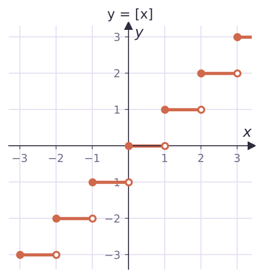
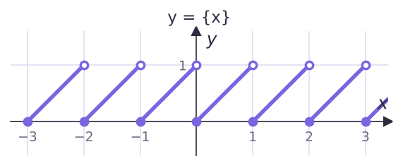
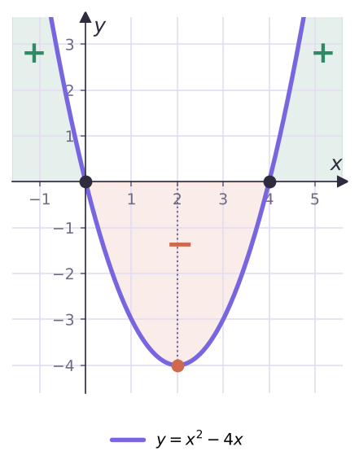
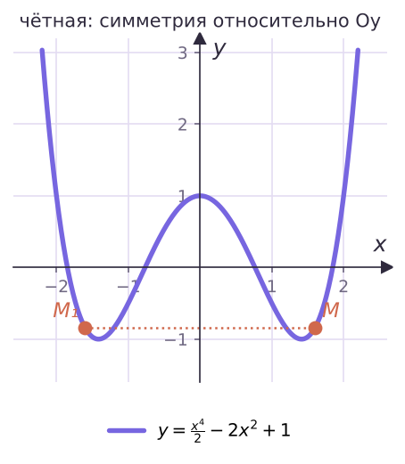
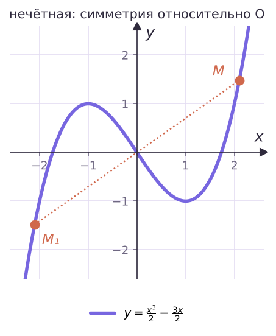

Теория
Что такое функция
Пусть X — множество значений независимой переменной, Y — множество значений зависимой. Функция — это правило, которое каждому элементу множества X ставит в соответствие единственный элемент множества Y. Пишут y = f(x); x называют аргументом.
- D(f) (или D(y)) — область определения: все значения, которые принимает аргумент;
- E(f) (или E(y)) — область значений: все значения, которые принимает сама функция.
Если функция задана формулой и область определения не указана, считают, что D(f) — все x, при которых формула имеет смысл. Главные запреты: на ноль делить нельзя, под корнем чётной степени не может быть отрицательного числа.
Функцию ещё называют отображением множества X на множество Y. Если при этом каждое значение из Y функция принимает ровно при одном x, отображение называют взаимно однозначным (или биекцией) — это уже знакомое по § 2 взаимно однозначное соответствие. Например, y = √(x − 1) — взаимно однозначное отображение [1; +∞) на [0; +∞), а y = x² как отображение R на [0; +∞) — нет: значение 4 получается и при x = 2, и при x = −2.
Функцию задают описательно, формулой, таблицей или графиком. Вот три важные функции, заданные описанием.
Функция Дирихле, целая и дробная части
- Функция Дирихле D(x): каждому рациональному числу ставит 1, каждому иррациональному — 0. D(0,25) = 1, D(√2) = 0. Область определения R, область значений {0, 1}. График нарисовать невозможно — но функция от этого не перестаёт быть функцией.
- Целая часть [x] — наибольшее целое число, не превосходящее x. [2,7] = 2, [5] = 5, [−2,3] = −3 (не −2: ведь −2 > −2,3!). E = Z.
- Дробная часть {x} = x − [x]. {2,7} = 0,7, {5} = 0, {−2,3} = −2,3 − (−3) = 0,7. E = [0; 1).
Для отрицательных чисел целая часть — это округление вниз, а не «отбросить дробь»: [−0,5] = −1. Поэтому и дробная часть всегда неотрицательна: {−0,5} = −0,5 − (−1) = 0,5.


Почему график {x} повторяется? Если k — целое, то [x + k] = [x] + k, а значит {x + k} = {x}: от прибавления целого числа дробная часть не меняется. На [0; 1) имеем {x} = x, и этот кусок «размножается» вдоль всей оси.
Нули, знакопостоянство, монотонность
Ты уже знаешь эти характеристики. Для y = x² − 4x:

- нули (где y = 0): x = 0 и x = 4;
- промежутки знакопостоянства: y > 0 на (−∞; 0) и на (4; +∞), y < 0 на (0; 4);
- монотонность: убывает на (−∞; 2], возрастает на [2; +∞).
Наибольшее и наименьшее значения
Число f(x₀) называют наибольшим значением функции f на множестве M ⊂ D(f), если x₀ ∈ M и для всех x ∈ M выполняется f(x) ≤ f(x₀). Обозначают maxM f(x). Наименьшее значение minM f(x) определяют так же, с неравенством f(x) ≥ f(x₀).
Обрати внимание: значение должно достигаться в какой-то точке x₀ из M. Поэтому не у всякой функции оно есть. У y = x² на R наименьшее значение 0, а наибольшего нет. У y = 1/x на (0; +∞) нет ни того, ни другого: значения сколь угодно близки к 0, но 0 не достигается.
Удобные факты: если f возрастает на [a; b], то min = f(a), max = f(b); если убывает — наоборот. Если функция внутри отрезка меняет монотонность, проверяй и точку «поворота».
Найди наибольшее и наименьшее значения f(x) = x² − 2x на отрезке [0; 3].
Выделим квадрат: f(x) = (x − 1)² − 1. Функция убывает на [0; 1] и возрастает на [1; 3].
Наименьшее значение — в вершине: f(1) = −1. Наибольшее — на одном из концов: f(0) = 0, f(3) = 3. Итак, min[0; 3] f(x) = −1, max[0; 3] f(x) = 3.
Найди область значений функции y = x/(x² + 1).
Идея: число a принадлежит E(y) ровно тогда, когда уравнение x/(x² + 1) = a имеет хотя бы один корень. Знаменатель x² + 1 > 0, поэтому уравнение равносильно ax² − x + a = 0.
- Если a = 0, корень x = 0 есть — значит, 0 ∈ E(y).
- Если a ≠ 0, уравнение квадратное; корни есть при дискриминанте D = 1 − 4a² ≥ 0, то есть |a| ≤ 1/2.
Ответ: E(y) = [−1/2; 1/2].
Чётные и нечётные функции
Функцию f называют чётной, если для любого x из области определения выполняется f(−x) = f(x), и нечётной, если f(−x) = −f(x).
В определении спрятано требование к области определения: раз f(−x) должно существовать для каждого x ∈ D(f), то вместе с x в D(f) должно лежать и −x. Такую область называют симметричной относительно начала координат. Если это не так, функция ни чётная, ни нечётная — дальше можно не проверять.


Ось ординат — ось симметрии графика чётной функции. Начало координат — центр симметрии графика нечётной функции.
Пусть точка M(a; b) лежит на графике чётной функции, то есть f(a) = b. Тогда f(−a) = f(a) = b, значит, точка M₁(−a; b), симметричная M относительно оси Oy, тоже лежит на графике. Для нечётной функции так же получаем точку (−a; −b), симметричную M относительно начала координат.
Исследуй на чётность: а) f(x) = x³ − 2x; б) g(x) = |x| + x²; в) h(x) = x² + x; г) k(x) = x²/(x − 1).
- а) D(f) = R — симметрична. f(−x) = −x³ + 2x = −(x³ − 2x) = −f(x) — нечётная.
- б) R; g(−x) = |−x| + (−x)² = |x| + x² — чётная.
- в) R; h(−x) = x² − x. Это не равно ни h(x), ни −h(x) — проверим на числе: h(1) = 2, h(−1) = 0. Ни чётная, ни нечётная.
- г) D = (−∞; 1) ∪ (1; +∞) — не симметрична (1 выколото, а −1 нет). Ни чётная, ни нечётная.
Чтобы доказать, что функция не чётная, мало написать «f(−x) ≠ f(x)» в общем виде — нужно предъявить конкретное число, как в пункте в): h(−1) ≠ h(1). И не забывай первым делом смотреть на область определения.
Полезное следствие: если нечётная функция определена в нуле, то f(0) = −f(0), откуда f(0) = 0. А функция y = 0 на R одновременно и чётная, и нечётная.
Задачи урока
Реши в тетради. Ответы разберём на занятии.
Из учебника
- № 5.1, 5.2 — Область определения функции.
- № 5.3, 5.4 — Область значений функции.
- № 5.6, 5.8 — Нули и промежутки знакопостоянства, в том числе для [x], {x}, D(x).
- № 5.12, 5.13 — Доказать чётность (нечётность) функции.
- № 5.17, 5.18 — Наибольшее и наименьшее значения на множестве.
Тест к уроку
Домашнее задание
№ 5.2, 5.4, 5.9 (1, 2), 5.13 (1), 5.18 из учебника письменно. Нарисовать в тетради графики [x] и {x} на отрезке [−3; 3].